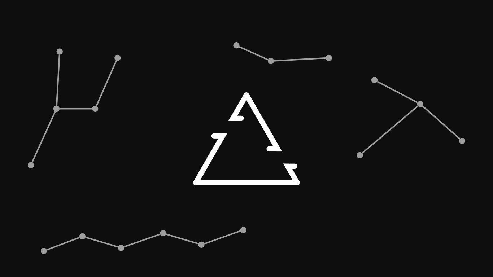

Today, T’NOIR TAROT becomes SOULINK.
This is more than a change of name. It marks the beginning of a new chapter — one that reflects how our vision has grown and where we want to go next.
A New Identity, Built on the Same Foundation
T’NOIR TAROT began with a simple intention: to create a space where people could explore their questions, gain new perspectives, and reflect on the stories shaping their lives.
As the project evolved, so did our vision.
We realized that what we wanted to build could extend beyond the word Tarot. The cards were our starting point, but the deeper purpose was always about connection — with our thoughts, emotions, experiences, and inner selves.
That vision became SOULINK.
What Does SOULINK Mean?
The name SOULINK brings together two ideas:
- SOUL — the inner self, personal identity, emotions, and the experiences that make us who we are.
- LINK — connection, understanding, and the relationships between our inner world and the world around us.
Together, SOULINK represents a connection to the self.
It reflects our belief that understanding does not always begin with finding an answer. Sometimes, it begins with asking a better question.
What Changes?
Our name and visual identity are evolving, and our brand is moving toward a broader vision.
SOULINK will continue to offer tarot readings while building a more expansive identity around self-discovery, reflection, and personal perspective.
The transition also gives us room to explore new ideas and experiences in the future.
What Stays the Same?
Although our name has changed, the foundation remains.
Our commitment to thoughtful interpretations, personalized experiences, confidentiality, and respect for every individual's perspective continues under SOULINK.
We are not leaving behind what T’NOIR TAROT built. We are carrying it forward into something new.
A New Chapter Begins
To everyone who has followed, supported, or experienced T’NOIR TAROT: thank you for being part of the beginning.
Today, we move forward under a new name, with a wider vision and the same intention.
T’NOIR TAROT is now SOULINK.
A new identity. A deeper connection.
SOULINK — Your story. Your perspective.